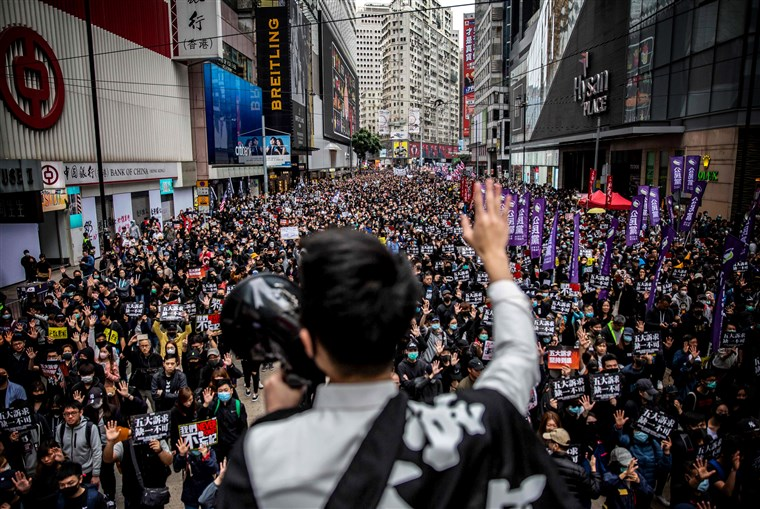
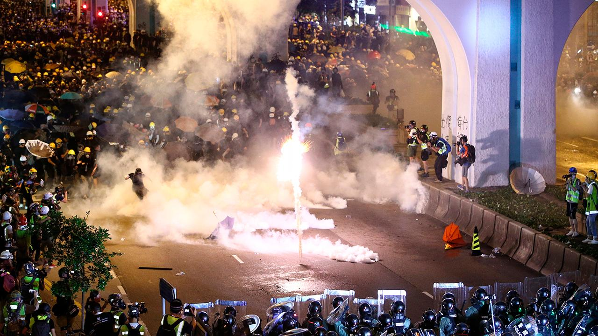

ABOUT THE PROTESTS
Five demands, not one less.
- Full withdrawal of the extradition bill.
- A commission of inquiry into alleged police brutality.
- Retracting the classification of protesters as “rioters”.
- Amnesty for arrested protesters.
- Dual universal suffrage, meaning for both the Legislative Council and the Chief Executive.
- (Additionally, although not listed under the five demands, the resignation of Carrie Lam is protested for)
- Esperanto-paĝo estas en la verkoj por Esperanto-parolantoj, kiuj ne bone parolas la anglan. Ĉi tio atendas finiĝi fine de februaro 2020 finfine. Dankon por kompreni.
- 粵語頁面係為啲講廣東話既人, 定話不好英文嘅講漢語的人而寫的。 預計這項工作將於2020年2月完成。 多謝你嘅理解。
Protest dates: Click this link for a constantly updated protest schedule.
Locations: Thoughout Hong Kong, Kowloon, Mong Kok, and even outside Hong Kong.

WHAT YOU CAN DO
Frequent location updates, as well as police clashes, are posted on LIHKG.com.
Please Note! This website was created to inform people of the current protests occurring in Hong Kong. While we do not promote violence, we understand this is the inevitable result of dictatorship.
Remember: You too can help the students in Hong Kong in their fight for freedom. Contact your local government or send an email to your representative. Create posters or Lennon walls, and hang them on public spaces, so everyone can see. Additionally, you can attempt to boycott Chinese vendors, such as AliExpress or Wish, and inform the people around you about the Hong Kong situation.